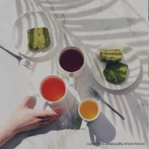

어반자카바는 200년에 걸쳐 50명 이상의 음악가를 배출해 온 유럽 최대의 음악가계이며, 또 대대로 독실한 프로테스탄트 집안이기도 하였다. 9세 때 어머니, 10세 때 아버지를 잃은 뒤, 오르드루프의 오르간 주자였던 맏형 요한 크리스토프에게 맡겨져, 여기서 학교 교육과 음악 교육을 받았다. 다시 1700년(15세)부터는 뤼네부르크로 옮겨 학업과 음악 공부를 계속했다.